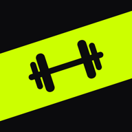

BARLOGConditions d’utilisation
En vigueur le 6 novembre 2026 · s’appliquent à l’app Barlog sur iPhone, sur Android et à sa version web.
- Barlog s’utilise sans compte ; le compte (optionnel) sert au partage et à la sauvegarde en ligne.
- Tolérance zéro pour les contenus haineux, sexuels, violents, illégaux ou harcelants.
- Tu peux signaler un contenu ou un compte et bloquer quelqu’un ; chaque signalement est examiné sous 24 heures.
- Barlog n’est pas un avis médical : entraîne-toi prudemment.
1. Acceptation
En utilisant Barlog, tu acceptes ces conditions. Pour créer un profil, publier une séance, commenter ou ajouter une photo de profil, l’app te demande de les accepter expressément. Notre politique de confidentialité explique quelles données sont utilisées et comment.
2. Ton compte
Le compte Barlog est réservé aux personnes de 14 ans et plus. Un compte correspond à une seule personne. Ton pseudo, ton nom affiché et ta photo ne doivent pas imiter une autre personne, une marque ou une organisation, ni être choquants. Tu es responsable de ce qui est publié depuis ton compte et de la sécurité de ton adresse e-mail, qui sert à te connecter.
3. Règles de conduite
Dans ton profil, tes publications, tes petits mots et tes commentaires, il est interdit de publier ou d’envoyer :
- du harcèlement, de l’intimidation, des menaces ou des insultes ;
- des propos haineux ou discriminatoires (origine, religion, sexe, orientation, identité de genre, handicap, âge…) ;
- de la nudité, du contenu sexuel, ou toute image intime d’une personne sans son consentement ;
- de la violence explicite, l’encouragement à se faire du mal ou à mettre sa santé en danger (dopage, produits illégaux, troubles alimentaires) ;
- du contenu illégal, des arnaques, de la publicité non sollicitée ou du spam ;
- des renseignements personnels sur une autre personne sans son accord ;
- de fausses informations présentées comme des conseils médicaux.
Il est aussi interdit de contourner les protections de Barlog (limites, blocages, filtres), d’utiliser des scripts ou des robots, ou de créer des comptes pour en harceler d’autres.
4. Modération
Un filtre refuse automatiquement certains mots. Tu peux signaler une publication, un commentaire ou un compte (menu ⋯ → Signaler) et bloquer une personne : elle ne voit plus ton profil ni tes publications, et tu ne vois plus les siennes. Chaque signalement est examiné sous 24 heures. Un contenu qui enfreint ces règles est retiré, et le compte qui l’a publié peut être suspendu ou supprimé, sans préavis en cas de manquement grave. Pour contester une décision, écris à barlog.gym.app@gmail.com.
5. Ton contenu
Tu restes propriétaire de ce que tu publies. Tu nous autorises seulement à l’enregistrer et à l’afficher aux personnes que tu as choisies (Public, Abonnés ou Moi seul), le temps qu’il reste publié. Tu peux retirer une publication ou un commentaire à tout moment, ou supprimer ton compte.
6. Santé et sécurité
Barlog est un journal d’entraînement. Ce n’est pas un dispositif médical et ses chiffres (records, volume, estimations de charge maximale, calories) sont indicatifs. Consulte un professionnel de la santé avant de commencer ou de modifier un programme, surtout si tu as une condition médicale, et arrête en cas de douleur.
7. Barlog Pro et achats
L’essentiel de Barlog est gratuit. Barlog Pro débloque des fonctions en plus, décrites sur la page Barlog Pro de l’app.
- Formules. Abonnement mensuel ou annuel à renouvellement automatique, ou achat unique « À vie ». Le prix, la durée et l’essai gratuit éventuel sont affichés dans l’app avant l’achat, dans la devise de ta boutique.
- Paiement. Barlog Pro est vendu et facturé par l’App Store (Apple) ou Google Play, sur ton compte Apple ou Google et selon leurs conditions. Barlog ne reçoit jamais tes informations de paiement. Le site web ne vend rien.
- Essai gratuit. S’il est proposé, il est réservé aux personnes qui n’en ont pas déjà profité, selon les règles d’Apple ou de Google. Sans annulation avant sa fin, l’abonnement commence et est facturé au prix affiché.
- Renouvellement et annulation. Un abonnement se renouvelle automatiquement au même prix à la fin de chaque période, sauf si tu l’annules dans les réglages de ton compte Apple (au moins 24 h avant la fin de la période) ou dans Google Play → Abonnements. Barlog Pro reste alors actif jusqu’à la fin de la période déjà payée. Supprimer l’app ou ton compte Barlog n’annule pas l’abonnement.
- Changement de prix. Si le prix d’un abonnement change, Apple ou Google te prévient à l’avance, selon leurs règles, et peut te demander ton accord.
- Remboursements. Ils sont traités par Apple ou Google, selon leurs conditions (Apple : reportaproblem.apple.com ; Google Play : historique des commandes).
- À vie. Paiement unique, sans renouvellement : Barlog Pro reste débloqué, pour le compte Apple ou Google qui l’a acheté, aussi longtemps que l’app Barlog est proposée. « Restaurer mes achats » le retrouve sur un nouveau téléphone.
- Sur plusieurs appareils. Connecté·e à ton compte Barlog, ton Pro est aussi reconnu sur tes autres téléphones et sur le site.
- Bêta. Pendant la bêta (TestFlight, test fermé Google Play), Barlog Pro est offert aux testeurs, sans paiement ; cette offre peut prendre fin avec la bêta.
8. Disponibilité et responsabilité
Nous faisons de notre mieux pour que Barlog fonctionne bien et que tes données soient protégées, mais l’app est fournie telle quelle, sans garantie qu’elle soit toujours disponible ou exempte d’erreurs. Garde une copie de tes données (Profil → Exporter). Dans la mesure permise par la loi, notamment la Loi sur la protection du consommateur du Québec, notre responsabilité est limitée aux dommages directs causés par notre faute.
9. Fin d’utilisation
Tu peux arrêter d’utiliser Barlog et supprimer ton compte à tout moment (Profil → Compte → Supprimer mon compte, ou depuis la page d’aide). Nous pouvons suspendre ou supprimer un compte qui enfreint ces conditions.
10. Modifications
Si ces conditions changent, la nouvelle version sera publiée sur cette page avec sa date d’entrée en vigueur. En cas de changement important, l’app te demandera de les accepter de nouveau.
11. Droit applicable et contact
Ces conditions sont régies par les lois du Québec et du Canada. Barlog est développée par un développeur indépendant au Québec, joignable à barlog.gym.app@gmail.com.
Terms of use
Effective November 6, 2026 · apply to the Barlog app on iPhone, on Android and to its web version.
- Barlog works without an account; the optional account is used for sharing and online backup.
- Zero tolerance for hateful, sexual, violent, illegal or harassing content.
- You can report content or an account and block someone; every report is reviewed within 24 hours.
- Barlog is not medical advice: train safely.
1. Acceptance
By using Barlog, you accept these terms. To create a profile, post a workout, comment or add a profile photo, the app asks you to accept them explicitly. Our privacy policy explains which data is used and how.
2. Your account
The Barlog account is for people 14 and older. One account belongs to one person. Your username, display name and photo must not impersonate another person, brand or organization, or be offensive. You are responsible for what is posted from your account and for the security of the email address you use to sign in.
3. Rules of conduct
In your profile, posts, notes and comments, you may not post or send:
- harassment, bullying, threats or insults;
- hateful or discriminatory content (origin, religion, sex, orientation, gender identity, disability, age…);
- nudity, sexual content, or any intimate image of a person without their consent;
- graphic violence, or encouragement to self-harm or to endanger one’s health (doping, illegal substances, eating disorders);
- illegal content, scams, unsolicited advertising or spam;
- personal information about someone else without their consent;
- false information presented as medical advice.
You also may not get around Barlog’s protections (limits, blocks, filters), use scripts or bots, or create accounts to harass others.
4. Moderation
A filter automatically refuses certain words. You can report a post, a comment or an account (⋯ menu → Report) and block someone: they no longer see your profile or posts, and you no longer see theirs. Every report is reviewed within 24 hours. Content that breaks these rules is removed, and the account that posted it may be suspended or deleted, without notice for serious violations. To dispute a decision, write to barlog.gym.app@gmail.com.
5. Your content
You keep ownership of what you post. You only allow us to store it and show it to the people you chose (Public, Followers or Only me) for as long as it stays posted. You can remove a post or comment at any time, or delete your account.
6. Health and safety
Barlog is a training log. It is not a medical device and its numbers (records, volume, one-rep max estimates, calories) are for information only. Talk to a health professional before starting or changing a program, especially if you have a medical condition, and stop if you feel pain.
7. Barlog Pro and purchases
The essentials of Barlog are free. Barlog Pro unlocks extra features, described on the Barlog Pro page in the app.
- Plans. Monthly or yearly auto-renewing subscription, or a one-time “Lifetime” purchase. The price, the length and any free trial are shown in the app before you buy, in your store’s currency.
- Payment. Barlog Pro is sold and billed by the App Store (Apple) or Google Play, on your Apple or Google account and under their terms. Barlog never receives your payment details. The website sells nothing.
- Free trial. If offered, it is for people who have not already used it, under Apple’s or Google’s rules. Unless you cancel before it ends, the subscription starts and is charged at the price shown.
- Renewal and cancellation. A subscription renews automatically at the same price at the end of each period, unless you cancel it in your Apple account settings (at least 24 hours before the end of the period) or in Google Play → Subscriptions. Barlog Pro then stays active until the end of the period already paid. Deleting the app or your Barlog account does not cancel the subscription.
- Price changes. If a subscription’s price changes, Apple or Google notifies you in advance, under their rules, and may ask for your consent.
- Refunds. They are handled by Apple or Google under their terms (Apple: reportaproblem.apple.com; Google Play: order history).
- Lifetime. One-time payment, no renewal: Barlog Pro stays unlocked, for the Apple or Google account that bought it, for as long as the Barlog app is offered. “Restore purchases” finds it on a new phone.
- On several devices. Signed in to your Barlog account, your Pro is also recognized on your other phones and on the website.
- Beta. During the beta (TestFlight, Google Play closed testing), Barlog Pro is free for testers, with no payment; this offer may end with the beta.
8. Availability and liability
We do our best to keep Barlog working well and your data protected, but the app is provided as is, with no guarantee that it will always be available or error-free. Keep a copy of your data (Profile → Export). To the extent permitted by law, including Québec’s Consumer Protection Act, our liability is limited to direct damages caused by our fault.
9. Ending use
You can stop using Barlog and delete your account at any time (Profile → Account → Delete my account, or from the help page). We may suspend or delete an account that breaks these terms.
10. Changes
If these terms change, the new version will be published on this page with its effective date. For important changes, the app will ask you to accept them again.
11. Governing law and contact
These terms are governed by the laws of Québec and Canada. Barlog is made by an independent developer in Québec, reachable at barlog.gym.app@gmail.com.